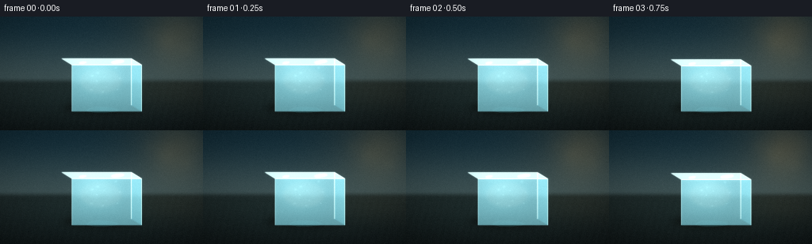
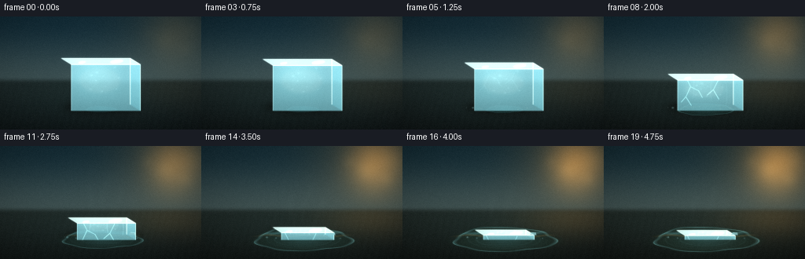

CODING AGENTS AS PIXEL WORLD MODELS
traex/DeepSeek-V4.1-Flash · phygen_096
点击播放 · 原生 RGB 像素
逐轮保存的候选
回放视频、检查图与代码变化。
每份候选均可单独播放。实际图片检查记录在下方工具轨迹中。
候选 01播放与检查图
点击播放 · 原生 RGB 像素


展开代码变化
--- 上一保存版本
+++ 本次保存版本
@@ -0,0 +1,459 @@
+from pathlib import Path
+
+import cv2
+import numpy as np
+from PIL import Image, ImageDraw
+
+import artifact_io
+
+
+W, H, N, FPS = 256, 144, 20, 4.0
+SCALE = 4
+RW, RH = W * SCALE, H * SCALE
+CASE = Path(__file__).resolve().parent
+
+
+def smoothstep(x):
+ x = np.clip(x, 0.0, 1.0)
+ return x * x * (3.0 - 2.0 * x)
+
+
+def gaussian_blob(xx, yy, cx, cy, sx, sy):
+ return np.exp(-0.5 * (((xx - cx) / sx) ** 2 + ((yy - cy) / sy) ** 2))
+
+
+def screen_polygon(points):
+ return [(int(round(x * SCALE)), int(round(y * SCALE))) for x, y in points]
+
+
+def polygon_mask(points, blur=0.0):
+ image = Image.new("L", (RW, RH), 0)
+ ImageDraw.Draw(image).polygon(screen_polygon(points), fill=255)
+ mask = np.asarray(image, dtype=np.float32) / 255.0
+ if blur > 0:
+ mask = cv2.GaussianBlur(mask, (0, 0), blur * SCALE)
+ return mask
+
+
+def composite(image, color, alpha):
+ color = np.asarray(color, dtype=np.float32)
+ if color.ndim == 1:
+ color = color[None, None, :]
+ alpha = np.clip(alpha, 0.0, 1.0)[..., None]
+ return image * (1.0 - alpha) + color * alpha
+
+
+def add_glow(image, mask, color, strength):
+ return image + np.asarray(color, dtype=np.float32) * (mask * strength)[..., None]
+
+
+def polyline_mask(points, width=1.0, blur=0.6):
+ image = Image.new("L", (RW, RH), 0)
+ ImageDraw.Draw(image).line(
+ screen_polygon(points),
+ fill=255,
+ width=max(1, int(round(width * SCALE))),
+ joint="curve",
+ )
+ mask = np.asarray(image, dtype=np.float32) / 255.0
+ if blur:
+ mask = cv2.GaussianBlur(mask, (0, 0), blur * SCALE)
+ return mask
+
+
+def ellipse_mask(cx, cy, rx, ry, blur=0.0, angle=0.0):
+ yy, xx = np.mgrid[0:RH, 0:RW].astype(np.float32) / SCALE
+ ca, sa = np.cos(angle), np.sin(angle)
+ dx, dy = xx - cx, yy - cy
+ xr = ca * dx + sa * dy
+ yr = -sa * dx + ca * dy
+ distance = (xr / max(rx, 1e-4)) ** 2 + (yr / max(ry, 1e-4)) ** 2
+ mask = np.clip((1.04 - distance) * 10.0, 0.0, 1.0)
+ if blur:
+ mask = cv2.GaussianBlur(mask, (0, 0), blur * SCALE)
+ return mask
+
+
+def make_background(xx, yy, heat):
+ # A cool, softly defocused wall gives way to warmer light as the timelapse advances.
+ wall_t = smoothstep(yy / 86.0)
+ top = np.array([22, 38, 49], dtype=np.float32)
+ low = np.array([59, 80, 84], dtype=np.float32)
+ bg = top + (low - top) * wall_t[..., None]
+ bg += np.array([-4, 8, 11], dtype=np.float32) * (1.0 - wall_t)[..., None]
+
+ sun = gaussian_blob(xx, yy, 226, 7, 52, 43)
+ warm_core = gaussian_blob(xx, yy, 220, 24, 22, 24)
+ bg = add_glow(bg, sun, [52, 29, 7], 0.40 + 0.60 * heat)
+ bg = add_glow(bg, warm_core, [112, 67, 20], 0.18 + 0.82 * heat)
+
+ # Restrained, out-of-focus warm highlights keep the upper-right light legible.
+ for cx, cy, radius, strength in [
+ (208, 31, 3.0, 0.16),
+ (236, 42, 2.2, 0.12),
+ (188, 20, 2.0, 0.10),
+ (245, 16, 3.8, 0.13),
+ ]:
+ halo = gaussian_blob(xx, yy, cx, cy, radius * 2.8, radius * 2.8)
+ bg = add_glow(bg, halo, [92, 67, 34], strength * (0.35 + 0.65 * heat))
+
+ # Dark slate table, with a soft horizon and subtle wet sheen.
+ floor_blend = smoothstep((yy - 77.0) / 8.0)
+ fy = np.clip((yy - 82.0) / 62.0, 0.0, 1.0)
+ floor = np.array([27, 39, 41], dtype=np.float32)
+ floor = floor[None, None, :] + (
+ np.array([-14, -18, -17], dtype=np.float32)
+ * fy[..., None]
+ )
+ grain = (
+ np.sin(xx * 0.72 + yy * 0.17)
+ + 0.55 * np.sin(xx * 1.71 - yy * 0.43)
+ + 0.35 * np.sin(xx * 3.13 + yy * 0.91)
+ )
+ floor += (grain * (1.2 + 0.4 * fy))[..., None] * np.array([0.50, 0.68, 0.70])
+ floor += (
+ gaussian_blob(xx, yy, 218, 91, 45, 18)[..., None]
+ * np.array([44, 27, 9], dtype=np.float32)
+ * (0.20 + 0.60 * heat)
+ )
+ floor += (
+ gaussian_blob(xx, yy, 120, 105, 88, 25)[..., None]
+ * np.array([3, 7, 7], dtype=np.float32)
+ )
+ bg = bg * (1.0 - floor_blend[..., None]) + floor * floor_blend[..., None]
+
+ # Faint slab seams, intentionally soft enough to remain background texture.
+ seam1 = np.exp(-((yy - (91.0 + 0.025 * (xx - 128.0))) / 0.42) ** 2)
+ seam2 = np.exp(-((yy - (112.0 - 0.018 * (xx - 128.0))) / 0.38) ** 2)
+ bg -= ((seam1 + seam2) * 3.0)[..., None]
+
+ bg = cv2.GaussianBlur(bg, (0, 0), 0.8 * SCALE)
+ return bg
+
+
+def puddle_geometry(xx, yy, heat, frame):
+ phase = frame / (N - 1)
+ cx = 128.5 + 1.2 * np.sin(phase * 2.5)
+ cy = 118.1 + 1.0 * smoothstep(heat)
+ rx = 19.0 + 46.0 * smoothstep(heat)
+ ry = 3.6 + 12.2 * smoothstep(heat)
+ dx = (xx - cx) / rx
+ dy = (yy - cy) / ry
+ theta = np.arctan2(dy, dx)
+ radius = np.sqrt(dx * dx + dy * dy)
+ edge = (
+ 1.0
+ + 0.045 * np.sin(3.0 * theta + 0.8)
+ + 0.032 * np.sin(5.0 * theta - 0.5)
+ + 0.018 * np.sin(9.0 * theta + 1.4)
+ )
+ softness = 3.0 + 1.4 * np.sin(theta * 2.0) ** 2
+ mask = np.clip((edge - radius) * softness + 0.55, 0.0, 1.0)
+ mask *= smoothstep((yy - 84.0) / 5.0)
+ return mask, cx, cy, rx, ry, radius, edge, theta
+
+
+def render_puddle(image, xx, yy, heat, frame):
+ mask, cx, cy, rx, ry, radius, edge, theta = puddle_geometry(xx, yy, heat, frame)
+
+ # A broad dark shadow anchors the ice before any water is visible.
+ shadow = ellipse_mask(130, 116.0, 53, 11, blur=3.5)
+ image = image * (1.0 - 0.20 * shadow[..., None])
+ shadow_core = ellipse_mask(127, 114.5, 42, 7.0, blur=2.2)
+ image = image * (1.0 - 0.20 * shadow_core[..., None])
+
+ # Water is dark and reflective, not a flat blue shape.
+ depth = np.clip(0.28 + 0.72 * (1.0 - radius), 0.0, 1.0)
+ water = np.empty_like(image)
+ water[..., 0] = 13 + 11 * depth + 8 * heat
+ water[..., 1] = 34 + 18 * depth + 3 * heat
+ water[..., 2] = 38 + 16 * depth - 3 * heat
+ rim_light = np.exp(-((radius - edge + 0.025) / 0.035) ** 2)
+ water += rim_light[..., None] * np.array([42, 72, 75], dtype=np.float32)
+
+ # Window and warm-light reflections break the puddle into readable bands.
+ band = np.exp(-((yy - (110.0 + 1.5 * np.sin(xx * 0.09))) / 1.7) ** 2)
+ water += band[..., None] * np.array([30, 58, 62], dtype=np.float32) * mask[..., None]
+ warm_band = np.exp(-((yy - (114.3 + 1.0 * np.sin(xx * 0.12 + 0.8))) / 1.0) ** 2)
+ water += warm_band[..., None] * np.array([35, 20, 5], dtype=np.float32) * (0.25 + heat)
+
+ # A soft, rippled cyan reflection directly under the ice.
+ refl_x = np.exp(-((xx - (cx + 1.5)) / (rx * 0.52 + 2)) ** 2)
+ refl_y = np.exp(-((yy - (cy - 1.8)) / (ry * 0.70 + 1.0)) ** 2)
+ reflection = refl_x * refl_y * (0.30 + 0.20 * heat)
+ reflection *= 0.72 + 0.28 * np.sin(yy * 3.4 + frame * 0.55)
+ water += reflection[..., None] * np.array([42, 89, 103], dtype=np.float32)
+
+ image = image * (1.0 - 0.76 * mask[..., None]) + water * (0.76 * mask[..., None])
+
+ # Concentric capillary rings and small glints make the melt feel active.
+ ring_signal = 0.0
+ for offset, amplitude in [(0.54, 0.55), (0.76, 0.40)]:
+ wave_radius = offset + 0.05 * np.sin(frame * 0.7 + offset * 8)
+ ring_signal += amplitude * np.exp(-((radius - wave_radius) / 0.016) ** 2)
+ ring_signal *= mask * (0.10 + 0.17 * heat)
+ image += ring_signal[..., None] * np.array([42, 68, 70], dtype=np.float32)
+
+ edge_glint = np.clip(1.0 - np.abs(radius - edge) / 0.024, 0.0, 1.0)
+ edge_glint *= np.clip(0.5 + 0.5 * np.sin(theta * 7.0 + 0.9), 0.0, 1.0)
+ image += edge_glint[..., None] * np.array([34, 55, 56], dtype=np.float32) * (0.35 + heat)
+ return image, mask, cx, cy, rx, ry
+
+
+def cube_points(cx, base_y, width, depth, height):
+ def project(x, z, y):
+ return (
+ cx + x + 0.26 * z,
+ base_y - y + 0.16 * z,
+ )
+
+ hw, hd = width * 0.5, depth * 0.5
+ front_z, back_z = hd, -hd
+ a = project(-hw, front_z, 0)
+ b = project(hw, front_z, 0)
+ c = project(hw, back_z, 0)
+ d = project(-hw, back_z, 0)
+ at = project(-hw, front_z, height)
+ bt = project(hw, front_z, height)
+ ct = project(hw, back_z, height)
+ dt = project(-hw, back_z, height)
+ return {
+ "a": a, "b": b, "c": c, "d": d,
+ "at": at, "bt": bt, "ct": ct, "dt": dt,
+ }
+
+
+def render_ice(image, background, xx, yy, heat, frame):
+ phase = frame / (N - 1)
+ melt = smoothstep(heat * 0.96 + 0.04 * phase)
+ cx = 128.0 + 1.8 * np.sin(phase * 1.7)
+ base_y = 116.0
+ width = 88.0 * (1.0 - 0.27 * melt ** 1.45)
+ depth = 50.0 * (1.0 - 0.17 * melt)
+ height = max(7.2, 59.0 * (1.0 - 0.885 * melt ** 0.88))
+ p = cube_points(cx, base_y, width, depth, height)
+
+ # Slight organic sag: the top surface softens and lowers at its center.
+ if heat > 0.16:
+ sag = (heat - 0.16) * 2.1
+ for key in ("at", "bt", "ct", "dt"):
+ p[key] = (p[key][0], p[key][1] + sag)
+
+ top = min(p[k][1] for k in ("at", "bt", "ct", "dt"))
+ bottom = max(p[k][1] for k in ("a", "b", "c", "d"))
+
+ right_face = [p["b"], p["c"], p["ct"], p["bt"]]
+ front_face = [p["a"], p["b"], p["bt"], p["at"]]
+ top_face = [p["at"], p["bt"], p["ct"], p["dt"]]
+ silhouette = [p["a"], p["b"], p["c"], p["ct"], p["dt"], p["at"]]
+
+ right_mask = polygon_mask(right_face, blur=0.45)
+ front_mask = polygon_mask(front_face, blur=0.45)
+ top_mask = polygon_mask(top_face, blur=0.55)
+ whole_mask = np.clip(right_mask + front_mask + top_mask, 0.0, 1.0)
+
+ # Background refraction makes the faces feel like volumes rather than decals.
+ map_x = xx + 1.4 * np.sin(yy * 0.22 + phase * 3.0) + 0.030 * (yy - top)
+ map_y = yy - height * (0.045 + 0.025 * heat) + 1.0 * np.sin(xx * 0.31 - 0.7)
+ map_x = (map_x * SCALE).astype(np.float32)
+ map_y = (map_y * SCALE).astype(np.float32)
+ refracted = cv2.remap(
+ background.astype(np.float32),
+ map_x,
+ map_y,
+ interpolation=cv2.INTER_LINEAR,
+ borderMode=cv2.BORDER_REFLECT,
+ )
+
+ vertical = np.clip((yy - top) / max(bottom - top, 1.0), 0.0, 1.0)
+
+ # Right face: cool, dense, with a warm transmitted rim.
+ right_color = 0.48 * refracted + np.array([75, 157, 177], dtype=np.float32)
+ right_color *= (1.0 - 0.11 * vertical)[..., None]
+ right_color += (gaussian_blob(xx, yy, p["bt"][0] - 2, (top + bottom) * 0.5, 6, height * 0.55))[..., None] * np.array([28, 45, 42])
+ image = composite(image, right_color, right_mask * 0.72)
+
+ # Front face: pale blue-white, brighter near the upper surface.
+ front_color = 0.36 * refracted + np.array([124, 198, 213], dtype=np.float32)
+ front_color += ((1.0 - vertical) * 22.0)[..., None] * np.array([0.78, 0.93, 1.0], dtype=np.float32)
+ front_color -= (vertical ** 1.7 * 15.0)[..., None] * np.array([0.50, 0.55, 0.60], dtype=np.float32)
+ front_color += (gaussian_blob(xx, yy, cx - 8, top + height * 0.35, width * 0.25, height * 0.30))[..., None] * np.array([24, 31, 29])
+ image = composite(image, front_color, front_mask * 0.79)
+
+ # Top face catches the strongest light and carries a pale icy bloom.
+ top_color = 0.24 * refracted + np.array([211, 241, 241], dtype=np.float32)
+ top_color += (gaussian_blob(xx, yy, p["ct"][0] - 9, top + 2, 21, 8))[..., None] * np.array([27, 24, 13]) * (0.45 + 0.55 * heat)
+ top_color += (gaussian_blob(xx, yy, p["at"][0] + 13, top + 2, 19, 8))[..., None] * np.array([15, 21, 22])
+ image = composite(image, top_color, top_mask * 0.90)
+
+ # Milky internal core and air pockets create depth within the transparent body.
+ core = ellipse_mask(cx - 1, top + height * 0.48, width * 0.30, height * 0.27, blur=2.0)
+ core *= whole_mask
+ image = composite(image, np.array([205, 237, 238], dtype=np.float32), core * 0.14)
+
+ rng = np.random.default_rng(91)
+ bubbles = np.zeros((RH, RW), dtype=np.float32)
+ for _ in range(10):
+ bx = cx + rng.uniform(-width * 0.34, width * 0.34)
+ by = top + rng.uniform(0.16, 0.72) * height
+ radius = rng.uniform(0.55, 1.25)
+ bubble = gaussian_blob(xx, yy, bx, by, radius, radius * 0.80)
+ bubbles += bubble * rng.uniform(0.20, 0.50)
+ image = add_glow(image, bubbles * whole_mask, [74, 84, 82], 0.42)
+
+ # Fractures appear as the ice is stressed by the rising temperature.
+ crack_alpha = smoothstep((heat - 0.10) / 0.40) * 0.72
+ if crack_alpha > 0.01:
+ crack_sets = [
+ [(cx - 24, top + 6), (cx - 19, top + 16), (cx - 25, top + 29), (cx - 18, top + 40)],
+ [(cx - 19, top + 16), (cx - 9, top + 21), (cx - 4, top + 30)],
+ [(cx + 16, top + 8), (cx + 10, top + 20), (cx + 17, top + 32)],
+ [(cx + 10, top + 20), (cx + 2, top + 27)],
+ [(cx - 25, top + 29), (cx - 31, top + 36)],
+ ]
+ cracks = np.zeros((RH, RW), dtype=np.float32)
+ for crack in crack_sets:
+ cracks = np.maximum(cracks, polyline_mask(crack, width=0.55, blur=0.34))
+ image = add_glow(image, cracks * whole_mask, [171, 220, 221], crack_alpha)
+
+ # Wet rivulets run down the front once melting is underway.
+ if heat > 0.20:
+ rivulets = np.zeros((RH, RW), dtype=np.float32)
+ for rx, bend, start in [(-17, 2.2, 0.10), (8, -1.5, 0.20), (26, 1.3, 0.32)]:
+ points = []
+ for j in range(7):
+ f = j / 6.0
+ points.append((
+ cx + rx + bend * np.sin(f * 2.4 + phase),
+ top + height * (start + 0.68 * f),
+ ))
+ rivulets = np.maximum(rivulets, polyline_mask(points, width=0.50, blur=0.45))
+ image = add_glow(image, rivulets * front_mask, [185, 226, 225], 0.24 * smoothstep((heat - 0.20) / 0.55))
+
+ # Crisp, uneven edge light: the strongest photographic cue for clear ice.
+ edges = np.zeros((RH, RW), dtype=np.float32)
+ for edge in [
+ [p["at"], p["bt"], p["ct"], p["dt"], p["at"]],
+ [p["a"], p["at"]],
+ [p["b"], p["bt"]],
+ [p["c"], p["ct"]],
+ ]:
+ edges = np.maximum(edges, polyline_mask(edge, width=0.68, blur=0.28))
+ image = add_glow(image, edges * whole_mask, [216, 246, 243], 0.62)
+
+ # Two small specular patches imply a broad softbox above and to the right.
+ spec1 = ellipse_mask(cx + width * 0.23, top + 4.2, 8.0, 1.5, blur=0.8, angle=-0.13)
+ spec2 = ellipse_mask(cx - width * 0.27, top + 5.3, 4.4, 1.1, blur=0.7, angle=-0.13)
+ image = add_glow(image, (spec1 + 0.65 * spec2) * top_mask, [180, 214, 211], 0.55)
+
+ # A detached chip separates late in the sequence and drifts into the puddle.
+ if heat > 0.48:
+ chip_visible = smoothstep((heat - 0.48) / 0.16)
+ chip_x = cx + width * 0.50 + 8.0 * (heat - 0.48)
+ chip_y = base_y - 3.0 - 3.2 * (1.0 - chip_visible)
+ chip = [
+ (chip_x - 3.8, chip_y),
+ (chip_x - 2.0, chip_y - 3.1),
+ (chip_x + 3.4, chip_y - 2.5),
+ (chip_x + 3.9, chip_y + 0.4),
+ ]
+ chip_mask = polygon_mask(chip, blur=0.45)
+ image = composite(image, np.array([145, 207, 216], dtype=np.float32), chip_mask * 0.77 * chip_visible)
+ image = add_glow(image, polyline_mask([chip[1], chip[2], chip[3]], width=0.45, blur=0.25), [211, 241, 239], 0.45 * chip_visible)
+
+ # Tiny droplets bead at the wet perimeter before merging into the puddle.
+ droplet_layer = np.zeros((RH, RW), dtype=np.float32)
+ if heat > 0.16:
+ for i, (ox, oy, r) in enumerate([
+ (-48, 0.2, 1.5), (-36, 1.2, 1.0), (36, 0.5, 1.3), (49, 1.6, 0.9), (22, 2.0, 1.1)
+ ]):
+ drop = ellipse_mask(cx + ox * (0.78 + 0.22 * heat), base_y + oy, r, r * 0.75, blur=0.30)
+ droplet_layer = np.maximum(droplet_layer, drop)
+ if np.any(droplet_layer):
+ image = composite(image, np.array([133, 190, 195], dtype=np.float32), droplet_layer * 0.34)
+ glint = ellipse_mask(cx - 47.5, base_y - 0.1, 0.45, 0.28, blur=0.20)
+ image = add_glow(image, glint, [191, 227, 223], 0.38)
+
+ return image, (p, whole_mask, top, bottom, height, width)
+
+
+def draw_vapor(image, xx, yy, heat, frame, ice_info):
+ if heat < 0.22:
+ return image
+ p, whole_mask, top, bottom, height, width = ice_info
+ cx = 128.0 + 1.8 * np.sin(frame / (N - 1) * 1.7)
+ vapor = np.zeros((RH, RW), dtype=np.float32)
+ strength = smoothstep((heat - 0.22) / 0.55)
+ for i, (offset, rise, phase_shift, width_px) in enumerate([
+ (-16, 42, 0.0, 2.0),
+ (2, 53, 1.7, 1.6),
+ (17, 37, 3.1, 1.5),
+ ]):
+ points = []
+ for j in range(12):
+ f = j / 11.0
+ points.append((
+ cx + offset + 4.2 * np.sin(f * 4.2 + phase_shift + frame * 0.12) + 5.0 * f,
+ top - 2.0 - rise * f - 1.0 * np.sin(f * 5.0 + phase_shift),
+ ))
+ mask = polyline_mask(points, width=width_px * (1.0 - 0.35 * np.linspace(0, 1, 12)[-1]), blur=1.6)
+ vapor = np.maximum(vapor, mask)
+ vapor = cv2.GaussianBlur(vapor, (0, 0), 2.4 * SCALE)
+ # Only vapor above the ice is visible, keeping the body of the ice crisp.
+ above = np.clip((top - yy + 2.0) / 3.0, 0.0, 1.0)
+ image = add_glow(image, vapor * above, [91, 99, 94], 0.11 * strength)
+ return image
+
+
+def finish_frame(image, frame):
+ image = np.clip(image, 0, 255)
+
+ # Soft highlight bloom, applied only to the brightest ice and puddle glints.
+ luminance = image.mean(axis=2)
+ bright = np.clip((luminance - 190.0) / 65.0, 0.0, 1.0)
+ bloom = cv2.GaussianBlur(bright.astype(np.float32), (0, 0), 2.8 * SCALE)
+ image += bloom[..., None] * np.array([17, 22, 22], dtype=np.float32)
+
+ # Warm/cool grade grows with the implied temperature.
+ heat = frame / (N - 1)
+ image[..., 0] += 2.0 + 3.5 * heat
+ image[..., 1] += 1.0 + 0.6 * heat
+ image[..., 2] -= 1.0 + 3.0 * heat
+
+ image = cv2.resize(image, (W, H), interpolation=cv2.INTER_AREA)
+
+ # Vignette focuses attention on the melting block.
+ yy, xx = np.mgrid[0:H, 0:W].astype(np.float32)
+ nx = (xx - W * 0.51) / (W * 0.60)
+ ny = (yy - H * 0.52) / (H * 0.64)
+ vignette = np.clip(1.0 - 0.20 * (nx * nx + ny * ny), 0.72, 1.0)
+ image = image * vignette[..., None]
+
+ # Fine, deterministic grain prevents the clean procedural surfaces from banding.
+ rng = np.random.default_rng(1000 + frame)
+ grain = rng.normal(0.0, 1.55, (H, W, 1)).astype(np.float32)
+ image += grain
+ return np.clip(image, 0, 255).astype(np.uint8)
+
+
+def render_frame(frame):
+ heat = float(smoothstep(frame / (N - 1)))
+ yy, xx = np.mgrid[0:RH, 0:RW].astype(np.float32) / SCALE
+
+ background = make_background(xx, yy, heat)
+ image, puddle_mask, _, _, _, _ = render_puddle(background, xx, yy, heat, frame)
+ image, ice_info = render_ice(image, background, xx, yy, heat, frame)
+ image = draw_vapor(image, xx, yy, heat, frame, ice_info)
+ return finish_frame(image, frame)
+
+
+def main():
+ frames = np.stack([render_frame(frame) for frame in range(N)])
+ assert frames.shape == (N, H, W, 3)
+ assert frames.dtype == np.uint8
+ artifact_io.save(frames, CASE)
+ print(f"Saved {N} frames to {CASE}")
+
+
+if __name__ == "__main__":
+ main()
候选 02播放与检查图
点击播放 · 原生 RGB 像素

展开代码变化
--- 上一保存版本
+++ 本次保存版本
@@ -77,15 +77,15 @@
def make_background(xx, yy, heat):
# A cool, softly defocused wall gives way to warmer light as the timelapse advances.
wall_t = smoothstep(yy / 86.0)
- top = np.array([22, 38, 49], dtype=np.float32)
- low = np.array([59, 80, 84], dtype=np.float32)
+ top = np.array([28, 46, 58], dtype=np.float32)
+ low = np.array([72, 93, 96], dtype=np.float32)
bg = top + (low - top) * wall_t[..., None]
- bg += np.array([-4, 8, 11], dtype=np.float32) * (1.0 - wall_t)[..., None]
+ bg += np.array([-3, 9, 12], dtype=np.float32) * (1.0 - wall_t)[..., None]
sun = gaussian_blob(xx, yy, 226, 7, 52, 43)
warm_core = gaussian_blob(xx, yy, 220, 24, 22, 24)
- bg = add_glow(bg, sun, [52, 29, 7], 0.40 + 0.60 * heat)
- bg = add_glow(bg, warm_core, [112, 67, 20], 0.18 + 0.82 * heat)
+ bg = add_glow(bg, sun, [65, 37, 8], 0.48 + 0.65 * heat)
+ bg = add_glow(bg, warm_core, [125, 77, 24], 0.24 + 0.88 * heat)
# Restrained, out-of-focus warm highlights keep the upper-right light legible.
for cx, cy, radius, strength in [
@@ -100,9 +100,9 @@
# Dark slate table, with a soft horizon and subtle wet sheen.
floor_blend = smoothstep((yy - 77.0) / 8.0)
fy = np.clip((yy - 82.0) / 62.0, 0.0, 1.0)
- floor = np.array([27, 39, 41], dtype=np.float32)
+ floor = np.array([39, 53, 54], dtype=np.float32)
floor = floor[None, None, :] + (
- np.array([-14, -18, -17], dtype=np.float32)
+ np.array([-12, -16, -15], dtype=np.float32)
* fy[..., None]
)
grain = (
@@ -113,8 +113,8 @@
floor += (grain * (1.2 + 0.4 * fy))[..., None] * np.array([0.50, 0.68, 0.70])
floor += (
gaussian_blob(xx, yy, 218, 91, 45, 18)[..., None]
- * np.array([44, 27, 9], dtype=np.float32)
- * (0.20 + 0.60 * heat)
+ * np.array([55, 34, 11], dtype=np.float32)
+ * (0.28 + 0.72 * heat)
)
floor += (
gaussian_blob(xx, yy, 120, 105, 88, 25)[..., None]
@@ -127,16 +127,16 @@
seam2 = np.exp(-((yy - (112.0 - 0.018 * (xx - 128.0))) / 0.38) ** 2)
bg -= ((seam1 + seam2) * 3.0)[..., None]
- bg = cv2.GaussianBlur(bg, (0, 0), 0.8 * SCALE)
+ bg = cv2.GaussianBlur(bg, (0, 0), 0.65 * SCALE)
return bg
def puddle_geometry(xx, yy, heat, frame):
phase = frame / (N - 1)
cx = 128.5 + 1.2 * np.sin(phase * 2.5)
- cy = 118.1 + 1.0 * smoothstep(heat)
- rx = 19.0 + 46.0 * smoothstep(heat)
- ry = 3.6 + 12.2 * smoothstep(heat)
+ cy = 117.9 + 1.3 * smoothstep(heat)
+ rx = 20.0 + 50.0 * smoothstep(heat)
+ ry = 3.7 + 13.4 * smoothstep(heat)
dx = (xx - cx) / rx
dy = (yy - cy) / ry
theta = np.arctan2(dy, dx)
@@ -165,24 +165,24 @@
# Water is dark and reflective, not a flat blue shape.
depth = np.clip(0.28 + 0.72 * (1.0 - radius), 0.0, 1.0)
water = np.empty_like(image)
- water[..., 0] = 13 + 11 * depth + 8 * heat
- water[..., 1] = 34 + 18 * depth + 3 * heat
- water[..., 2] = 38 + 16 * depth - 3 * heat
+ water[..., 0] = 20 + 15 * depth + 10 * heat
+ water[..., 1] = 47 + 25 * depth + 5 * heat
+ water[..., 2] = 51 + 22 * depth - 4 * heat
rim_light = np.exp(-((radius - edge + 0.025) / 0.035) ** 2)
- water += rim_light[..., None] * np.array([42, 72, 75], dtype=np.float32)
+ water += rim_light[..., None] * np.array([58, 94, 96], dtype=np.float32)
# Window and warm-light reflections break the puddle into readable bands.
band = np.exp(-((yy - (110.0 + 1.5 * np.sin(xx * 0.09))) / 1.7) ** 2)
- water += band[..., None] * np.array([30, 58, 62], dtype=np.float32) * mask[..., None]
+ water += band[..., None] * np.array([44, 79, 82], dtype=np.float32) * mask[..., None]
warm_band = np.exp(-((yy - (114.3 + 1.0 * np.sin(xx * 0.12 + 0.8))) / 1.0) ** 2)
- water += warm_band[..., None] * np.array([35, 20, 5], dtype=np.float32) * (0.25 + heat)
+ water += warm_band[..., None] * np.array([54, 32, 8], dtype=np.float32) * (0.30 + heat)
# A soft, rippled cyan reflection directly under the ice.
refl_x = np.exp(-((xx - (cx + 1.5)) / (rx * 0.52 + 2)) ** 2)
refl_y = np.exp(-((yy - (cy - 1.8)) / (ry * 0.70 + 1.0)) ** 2)
reflection = refl_x * refl_y * (0.30 + 0.20 * heat)
reflection *= 0.72 + 0.28 * np.sin(yy * 3.4 + frame * 0.55)
- water += reflection[..., None] * np.array([42, 89, 103], dtype=np.float32)
+ water += reflection[..., None] * np.array([55, 110, 125], dtype=np.float32)
image = image * (1.0 - 0.76 * mask[..., None]) + water * (0.76 * mask[..., None])
@@ -228,9 +228,9 @@
melt = smoothstep(heat * 0.96 + 0.04 * phase)
cx = 128.0 + 1.8 * np.sin(phase * 1.7)
base_y = 116.0
- width = 88.0 * (1.0 - 0.27 * melt ** 1.45)
+ width = 88.0 * (1.0 - 0.20 * melt ** 1.45)
depth = 50.0 * (1.0 - 0.17 * melt)
- height = max(7.2, 59.0 * (1.0 - 0.885 * melt ** 0.88))
+ height = max(9.5, 59.0 * (1.0 - 0.80 * melt ** 0.88))
p = cube_points(cx, base_y, width, depth, height)
# Slight organic sag: the top surface softens and lowers at its center.
@@ -268,20 +268,20 @@
vertical = np.clip((yy - top) / max(bottom - top, 1.0), 0.0, 1.0)
# Right face: cool, dense, with a warm transmitted rim.
- right_color = 0.48 * refracted + np.array([75, 157, 177], dtype=np.float32)
+ right_color = 0.54 * refracted + np.array([70, 156, 177], dtype=np.float32)
right_color *= (1.0 - 0.11 * vertical)[..., None]
right_color += (gaussian_blob(xx, yy, p["bt"][0] - 2, (top + bottom) * 0.5, 6, height * 0.55))[..., None] * np.array([28, 45, 42])
image = composite(image, right_color, right_mask * 0.72)
# Front face: pale blue-white, brighter near the upper surface.
- front_color = 0.36 * refracted + np.array([124, 198, 213], dtype=np.float32)
+ front_color = 0.44 * refracted + np.array([113, 191, 207], dtype=np.float32)
front_color += ((1.0 - vertical) * 22.0)[..., None] * np.array([0.78, 0.93, 1.0], dtype=np.float32)
front_color -= (vertical ** 1.7 * 15.0)[..., None] * np.array([0.50, 0.55, 0.60], dtype=np.float32)
front_color += (gaussian_blob(xx, yy, cx - 8, top + height * 0.35, width * 0.25, height * 0.30))[..., None] * np.array([24, 31, 29])
image = composite(image, front_color, front_mask * 0.79)
# Top face catches the strongest light and carries a pale icy bloom.
- top_color = 0.24 * refracted + np.array([211, 241, 241], dtype=np.float32)
+ top_color = 0.28 * refracted + np.array([213, 242, 242], dtype=np.float32)
top_color += (gaussian_blob(xx, yy, p["ct"][0] - 9, top + 2, 21, 8))[..., None] * np.array([27, 24, 13]) * (0.45 + 0.55 * heat)
top_color += (gaussian_blob(xx, yy, p["at"][0] + 13, top + 2, 19, 8))[..., None] * np.array([15, 21, 22])
image = composite(image, top_color, top_mask * 0.90)
@@ -416,9 +416,9 @@
# Warm/cool grade grows with the implied temperature.
heat = frame / (N - 1)
- image[..., 0] += 2.0 + 3.5 * heat
- image[..., 1] += 1.0 + 0.6 * heat
- image[..., 2] -= 1.0 + 3.0 * heat
+ image[..., 0] += 3.0 + 4.0 * heat
+ image[..., 1] += 1.5 + 0.8 * heat
+ image[..., 2] -= 0.5 + 3.0 * heat
image = cv2.resize(image, (W, H), interpolation=cv2.INTER_AREA)
@@ -426,7 +426,7 @@
yy, xx = np.mgrid[0:H, 0:W].astype(np.float32)
nx = (xx - W * 0.51) / (W * 0.60)
ny = (yy - H * 0.52) / (H * 0.64)
- vignette = np.clip(1.0 - 0.20 * (nx * nx + ny * ny), 0.72, 1.0)
+ vignette = np.clip(1.0 - 0.15 * (nx * nx + ny * ny), 0.78, 1.0)
image = image * vignette[..., None]
# Fine, deterministic grain prevents the clean procedural surfaces from banding.
候选 03播放与检查图
可观测工具轨迹
实际执行的命令与返回图片。
命令 1exit 0
/bin/bash -c "sed -n '1,240p' GENERATION_RULES.md"
命令 2exit 0
/bin/bash -c 'cat task_spec.json'
命令 3exit 0
/bin/bash -c 'cat prompt.txt'
命令 4exit 0
/bin/bash -c "find . -maxdepth 2 -type f -printf '%p\\n' | sort && printf '\\n--- dirs ---\\n' && find . -maxdepth 2 -type d -printf '%p\\n' | sort"
命令 5exit 0
/bin/bash -c "sed -n '1,260p' artifact_io.py"
命令 6exit 0
/bin/bash -c "sed -n '1,240p' player_template.html"
命令 7exit 0
/bin/bash -c "python - <<'PY' import importlib.util for m in ['numpy','PIL','cv2','imageio','matplotlib','scipy']: print(m, bool(importlib.util.find_spec(m))) PY"
命令 8exit 1
/bin/bash -c 'python generate.py'
命令 9exit 1
/bin/bash -c 'python generate.py'
命令 10exit 0
/bin/bash -c "nl -ba generate.py | sed -n '98,128p'"
命令 11exit 1
/bin/bash -c 'python generate.py'
命令 12exit 1
/bin/bash -c 'python generate.py'
命令 13exit 0
/bin/bash -c 'python generate.py'
命令 14exit 0
/bin/bash -c "python - <<'PY'
from PIL import Image
im=Image.open('inspection.png')
print(im.size, im.mode)
PY"命令 15exit 0
/bin/bash -c 'command -v chafa || command -v viu || command -v jp2 || command -v img2txt || true'
命令 16exit 0
/bin/bash -c "python - <<'PY'
import cv2, numpy as np
frames=np.stack([cv2.imread(f'frames/{i:02d}.png')[:,:,::-1] for i in range(20)])
for i in [0,4,9,14,19]:
f=frames[i].astype(float)
print(i, 'mean', f.mean((0,1)).round(1), 'std', f.std().round(1), 'minmax', int(f.min()), int(f.max()))
PY"命令 17exit 0
/bin/bash -c 'git status --short'
命令 18exit 0
/bin/bash -c "python - <<'PY'
from PIL import Image
import numpy as np
chars=' .:-=+*#%@'
for idx in [0,5,10,15,19]:
im=np.asarray(Image.open(f'frames/{idx:02d}.png').convert('L').resize((64,36)))
print('\\nFRAME',idx)
for row in im:
print(''.join(chars[min(9,int(v)*10//256)] for v in row))
PY"命令 19exit 0
/bin/bash -c "python - <<'PY'
from PIL import Image
import numpy as np
for idx in [0,5,10,15,19]:
a=np.asarray(Image.open(f'frames/{idx:02d}.png'))
print('\\n',idx)
for name,(x,y) in {'bg':(20,20),'table':(30,120),'icefront':(128,90),'icetop':(128,62),'leftpuddle':(85,120),'centerpuddle':(128,124),'rightpuddle':(170,120),'rim':(193,119)}.items():
print(name, tuple(a[y,x]))
PY"命令 20exit 0
/bin/bash -c 'python generate.py'
命令 21exit 0
/bin/bash -c "python - <<'PY'
from PIL import Image
import numpy as np
chars=' .:-=+*#%@'
for idx in [0,5,10,15,19]:
im=np.asarray(Image.open(f'frames/{idx:02d}.png').convert('L').resize((64,36)))
print('\\nFRAME',idx)
for row in im[12:32]:
print(''.join(chars[min(9,int(v)*10//256)] for v in row))
PY"命令 22exit 0
/bin/bash -c "python - <<'PY'
import cv2, numpy as np
f=np.stack([cv2.imread(f'frames/{i:02d}.png').astype(np.float32) for i in range(20)])
d=np.abs(f[1:]-f[:-1]).mean((1,2,3))
print('adjacent MAE:', ' '.join(f'{x:.2f}' for x in d))
print('mean adjacent:', d.mean().round(2), 'max:', d.max().round(2))
print('first-last MAE:', np.abs(f[-1]-f[0]).mean().round(2))
print('frame means:', ' '.join(f'{x:.1f}' for x in f.mean((1,2,3))))
PY"命令 23exit 0
/bin/bash -c "python - <<'PY'
import cv2, numpy as np
f=np.stack([cv2.imread(f'frames/{i:02d}.png')[:,:,::-1].astype(np.float32) for i in range(20)])
for i in [0,5,10,15,19]:
a=f[i]
print(i, 'R-B', round(float((a[...,0]-a[...,2]).mean()),2), 'sat', round(float((a.max(2)-a.min(2)).mean()),2))
PY
ls -lh generate.py pixels.npz index.html inspection.png transition_check.png frames/00.png frames/19.png"保存候选 3 份；完成命令 23 次；可验证图片返回 0 张。原始 API 响应与完整日志保留在本地。